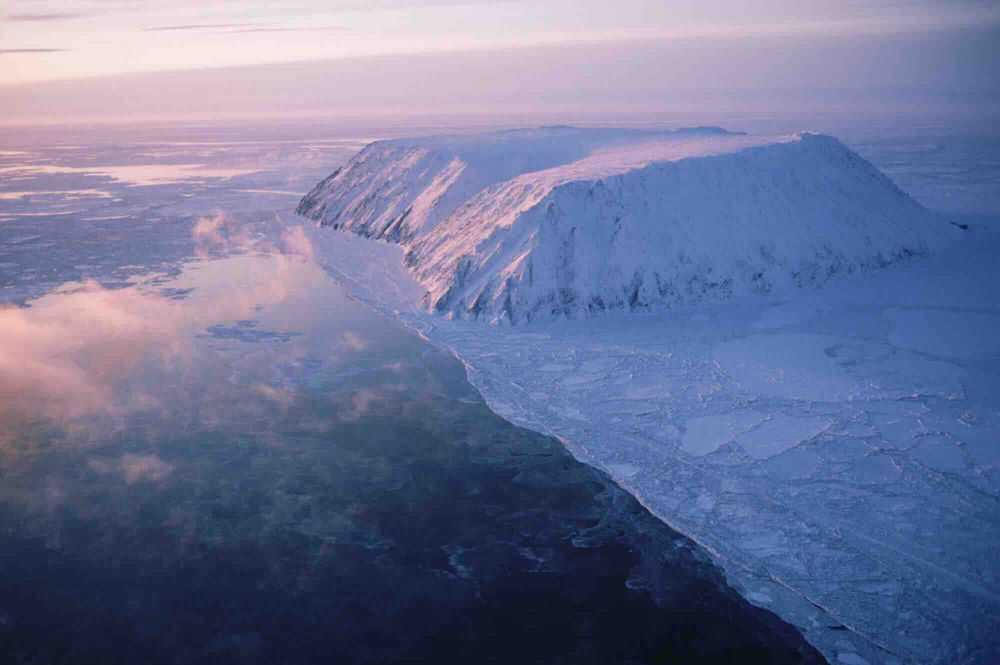
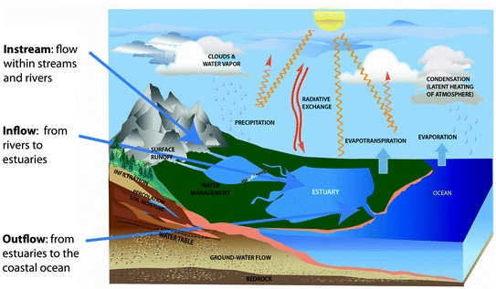

🌎 Exploring Earth's Amazing Ecosystems 🌎
Hello, young scientists! Today we're going on an exciting journey across our planet to explore different ecosystems! An ecosystem is a community of living organisms (plants, animals, and microorganisms) together with the nonliving components of their environment (like air, water, soil, and sunlight), all interacting as a system. Earth has many different types of ecosystems, each with its own special characteristics and incredible adaptations. Let's discover them together!
Major Ecosystem Types
Terrestrial Ecosystems (Land-Based)
🏔️ Tundra Ecosystems
Tundras are cold, treeless regions found in the Arctic and on top of high mountains. Places like the Bering Land Bridge in Alaska, the Tibetan Plateau in Asia, and Peary Land in Greenland are famous tundra ecosystems.


Tundra Facts: The ground in tundra ecosystems has a layer of permanently frozen soil called permafrost. During the brief summer, only the top layer of soil thaws!
🌳 Temperate Deciduous Forests
These forests have trees that lose their leaves in fall and regrow them in spring. Examples include Steigerwald Forest in Germany, Catoctin Mountain Park in the United States, and Białowieża Forest in Poland/Belarus.
Plant Adaptation: Deciduous trees shed their leaves in winter to conserve energy during the cold months when there isn't enough sunlight for effective photosynthesis.
🏜️ Desert Ecosystems
Deserts are hot, dry places that receive very little rainfall. The Great Victoria Desert in Australia, the Sonoran Desert in North America, the Sahara Desert in Africa, and the Taklamakan Desert in Asia are some of Earth's major deserts.
Animal Adaptation: Many desert animals are nocturnal (active at night) to avoid the extreme daytime heat. Some, like the kangaroo rat, can survive without drinking water by getting moisture from the seeds they eat!
🌾 Prairie/Grassland Ecosystems
Prairies are areas dominated by grasses rather than trees or shrubs. Buffalo Gap National Grassland and Tallgrass Prairie in North America are excellent examples of grassland ecosystems.
WOW Fact: Prairie grasses can have roots that extend more than 15 feet deep into the soil! These deep root systems help the grasses survive drought and fire.
🌲 Taiga/Boreal Forest Ecosystems
Taigas are forests of coniferous trees (like pine and spruce) found in northern regions with long, cold winters. The Eastern Siberian Taiga in Russia and Mount Rainier National Park in the United States contain taiga ecosystems.
Plant Adaptation: Coniferous trees have needle-like leaves covered in a waxy coating that helps prevent water loss during freezing temperatures.
🌴 Rainforest Ecosystems
Rainforests are dense forests with high rainfall and incredible biodiversity. The Amazon Rainforest, which includes Yasuni National Park in Ecuador, is the world's largest tropical rainforest.
Rainforest Facts: Even though rainforests cover less than 7% of Earth's land surface, they're home to more than 50% of the world's plant and animal species!
Aquatic Ecosystems (Water-Based)
🌊 Freshwater Ecosystems
Standing-Freshwater Ecosystems
These include lakes and ponds where water doesn't flow much. They're home to many species of fish, plants, and microscopic organisms.
Running-Freshwater Ecosystems
These include rivers and streams where water is constantly moving. The flowing water creates unique habitats and influences which organisms can live there.
Swamp Ecosystems
Swamps are wetlands dominated by trees and woody plants standing in slow-moving or still water.
Marsh Ecosystems
Marshes are wetlands dominated by grasses and reeds rather than trees.
Animal Adaptation: Some freshwater fish, like trout, have special adaptations to live in fast-moving water, including streamlined bodies and strong muscles.
🌊 Marine Ecosystems
Intertidal Zone Ecosystems
These are the shoreline areas that are covered by water at high tide and exposed to air at low tide. Organisms here must adapt to both wet and dry conditions.
Estuaries
Estuaries are where freshwater from rivers meets saltwater from the ocean, creating brackish water (partly salty). They're incredibly productive ecosystems and serve as nurseries for many marine species.


Deep Ocean/Abyssal Zone Ecosystems
These dark, cold ecosystems exist in the deepest parts of the ocean where sunlight cannot reach.
Animal Adaptation: Many deep-sea creatures produce their own light through bioluminescence to attract prey or mates in the total darkness of the deep ocean.
Climate and Water Characteristics
Temperature Patterns
| Ecosystem |
Temperature Pattern |
| Tundra |
Long, cold winters and short, cold/cool summers |
| Grasslands |
Hot summers and cool/cold winters |
| Temperate Forests |
Warm, wet summers and cold, wet winters |
| Deserts |
Year-round heat with minimal seasonal variation (some deserts get very cold at night!) |
| Rainforests |
Warm and humid year-round with little temperature variation |
Water Characteristics
Water Movement
Water can be flowing (like in rivers and streams) or still (like in lakes and ponds). The movement of water affects which organisms can live there and how nutrients are distributed.
Water Salinity
Water can be freshwater (contains very little salt, like lakes and rivers), saltwater (contains high amounts of salt, like oceans), or brackish water (a mixture of fresh and salt water, like in estuaries).
Oxygen Levels
The amount of dissolved oxygen in water decreases with depth. This is why different types of aquatic organisms live at different depths in lakes and oceans.
Nutrient Content
Some aquatic ecosystems, like estuaries, are very nutrient-rich, while others, like the open ocean, have fewer nutrients available.
Precipitation Patterns
Desert Precipitation
Deserts receive very little rainfall, often less than 10 inches (25 cm) per year. Some deserts may go years without rain!
Cold Mountain Areas
High mountain ecosystems may receive precipitation as snow year-round, creating unique habitats for specialized plants and animals.
Seasonal Precipitation
Many ecosystems have distinct wet and dry seasons. For example, tropical rainforests have a wet season with daily rainfall and a relatively drier season.
Flooding and Draining Cycles
Intertidal zones experience daily flooding and draining with the tides. Some wetlands have seasonal flooding cycles that are crucial for their ecosystem health.
Physical Features of Ecosystems
Soil Characteristics
| Ecosystem |
Soil Type |
Notable Features |
| Tundra |
Permafrost soil |
Permanently frozen below the surface; only top layer thaws in summer |
| Rainforests |
Surprisingly nutrient-poor |
Most nutrients are in the living plants, not the soil |
| Prairies |
Rich, deep soils |
Some of the most fertile soils on Earth due to grass decomposition |
| Deserts |
Dry, thin soils |
Often sandy or rocky with little organic matter |
Other Physical Features
Water Coverage
Some ecosystems, like swamps and marshes, have seasonal water coverage patterns. Areas may be flooded during rainy seasons and dry during other parts of the year.
Depth in Aquatic Ecosystems
Depth creates different zones in aquatic ecosystems, each with its own light levels, temperature, pressure, and organisms. The deepest ocean trenches are more than 36,000 feet (11,000 meters) deep!
Vegetation
Plant Adaptations
Tundra Plants
Tundra plants are small and grow close to the ground to avoid cold winds. They can photosynthesize in low temperatures and light conditions.
Desert Plants
Cacti and other desert plants store water in their tissues. Many have spines instead of leaves to reduce water loss and protect from animals. Some desert plants have very deep roots to reach underground water.
Taiga (Boreal Forest) Plants
Coniferous trees have needle-like leaves that don't fall off in winter. Their cone shape helps snow slide off rather than accumulating and breaking branches.
Temperate Forest Plants
Deciduous trees shed leaves in winter to conserve energy. Forest floor plants often bloom in early spring before the tree canopy blocks sunlight.
Aquatic Plants
Some aquatic plants float on the surface, some are rooted but have leaves that reach the surface, and others live completely underwater. They have special tissues filled with air to help them float.
Mangroves
Mangrove trees grow in coastal saltwater and have special roots that stick up out of the water to get oxygen. They can filter salt out of the water they absorb.
Animal Adaptations
Tundra Animals
Arctic foxes have small ears to prevent heat loss and white fur that provides camouflage in snow. Many tundra animals hibernate or migrate during the harsh winter.
Desert Animals
Camels can go for long periods without water and have special nostrils that recapture moisture when they exhale. Desert rodents often have highly efficient kidneys that conserve water.
Forest Animals
Many forest animals, like squirrels, build nests in trees for protection. Some, like bears, hibernate during winter when food is scarce.
Aquatic Animals
Fish have gills to extract oxygen from water. Some aquatic animals, like barnacles, attach permanently to surfaces. Others, like dolphins, need to swim to the surface to breathe air.
Biodiversity
Endemic Species
Endemic species are found ONLY in a particular ecosystem and nowhere else on Earth. For example, the kangaroo is endemic to Australia, and the black-footed ferret is native to the North American prairies.
WOW Fact: The black-footed ferret was once thought to be extinct! Thanks to conservation efforts, these endangered animals are making a comeback in protected prairie ecosystems.
Biodiversity Hotspots
Some ecosystems have an incredibly high number of different species. Tropical rainforests, coral reefs, and certain islands are known as biodiversity hotspots.
Geographic Locations
Global Distribution
Ecosystems aren't randomly distributed around the planet. They follow patterns based on latitude, climate, and geography:
- Tundra ecosystems are found in the far north and on high mountains
- Deserts are often found around 30° north and south of the equator
- Rainforests are primarily located near the equator
- Temperate forests exist in mid-latitude regions with moderate climates
Elevational Effects
As you climb a tall mountain, you'll pass through different ecosystems. The ecosystems change with elevation similar to how they change with latitude as you move from the equator toward the poles!
Human Interaction with Ecosystems
Research Stations
Scientists study ecosystems from research stations in places like Antarctica, the Amazon Rainforest, and coral reefs to learn more about how these amazing systems work.
National Preserves and Protected Areas
Many important ecosystems are protected in national parks, wildlife refuges, and marine sanctuaries to conserve their plants, animals, and natural processes.
Historical Significance
Some ecosystems have played important roles in human history. For example, the prairies of North America were home to huge bison herds that were central to the cultures of many Native American tribes.
Formation of Ecosystems
Geological Origins
Many ecosystems were shaped by geological events:
- Volcanic eruptions create new land that eventually develops into ecosystems
- Glaciers carved out lakes and valleys during ice ages
- Mountains form when tectonic plates collide, creating new habitats at different elevations
Ecosystem Age and Development
Some ecosystems are very ancient, like certain rainforests that have existed for millions of years. Others are relatively young, like newly formed volcanic islands.
WOW Fact: After a volcanic eruption creates new land, the first organisms to arrive are often lichens (a partnership between fungi and algae). These tough pioneers help break down rock into soil, eventually allowing other plants to grow!
Wrapping Up Our Ecosystem Adventure
Wow! We've traveled through so many amazing ecosystems across our planet! From the freezing tundra to the scorching desert, from the depths of the ocean to the tops of mountains, Earth is home to an incredible variety of living communities. Each ecosystem has its own special combination of climate, water, soil, plants, and animals, all working together in a delicate balance.
As you continue your science journey, remember that these ecosystems aren't separate from us—they're our home too! By understanding how ecosystems work, we can better protect them for future generations of scientists like YOU!